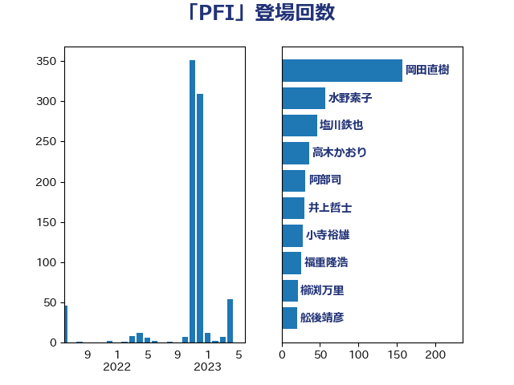

単語「PFI」

| 岡田直樹 | 自由民主党 | 157 回 |
| 水野素子 | 立憲民主党 | 57 回 |
| 塩川鉄也 | 日本共産党 | 46 回 |
| 高木かおり | 日本維新の会 | 36 回 |
| 阿部司 | 日本維新の会 | 31 回 |
| 井上哲士 | 日本共産党 | 30 回 |
| 小寺裕雄 | 自由民主党 | 28 回 |
| 福重隆浩 | 公明党 | 26 回 |
| 櫛渕万里 | れいわ新選組 | 21 回 |
| 舩後靖彦 | れいわ新選組 | 20 回 |
| 本庄知史 | 立憲民主党 | 19 回 |
| 川田龍平 | 立憲民主党 | 19 回 |
| 塩田博昭 | 公明党 | 18 回 |
| 青柳陽一郎 | 立憲民主党 | 16 回 |
| 広瀬めぐみ | 自由民主党 | 14 回 |
| 工藤彰三 | 自由民主党 | 13 回 |
| 河野太郎 | 自由民主党 | 12 回 |
| 浅野哲 | 国民民主党 | 10 回 |
| 緒方林太郎 | 無所属 | 9 回 |
| 熊谷裕人 | 立憲民主党 | 6 回 |
| 高橋千鶴子 | 日本共産党 | 5 回 |
| 斉藤鉄夫 | 公明党 | 5 回 |
| 稲富修二 | 立憲民主党 | 3 回 |
| 清水真人 | 自由民主党 | 3 回 |
| 末次精一 | 立憲民主党 | 3 回 |
| 篠原孝 | 立憲民主党 | 2 回 |
| 牧島かれん | 自由民主党 | 2 回 |
| 日下正喜 | 公明党 | 2 回 |
| 古川康 | 自由民主党 | 2 回 |
| 保岡宏武 | 自由民主党 | 2 回 |
| 青柳仁士 | 日本維新の会 | 1 回 |
| 鈴木俊一 | 自由民主党 | 1 回 |
| 萩生田光一 | 自由民主党 | 1 回 |
| 神谷宗幣 | 参政党 | 1 回 |
| 早坂敦 | 日本維新の会 | 1 回 |
| 川合孝典 | 国民民主党 | 1 回 |
| 山谷えり子 | 自由民主党 | 1 回 |
| 守島正 | 日本維新の会 | 1 回 |
| 大西英男 | 自由民主党 | 1 回 |
| 古賀友一郎 | 自由民主党 | 1 回 |
| 串田誠一 | 日本維新の会 | 1 回 |